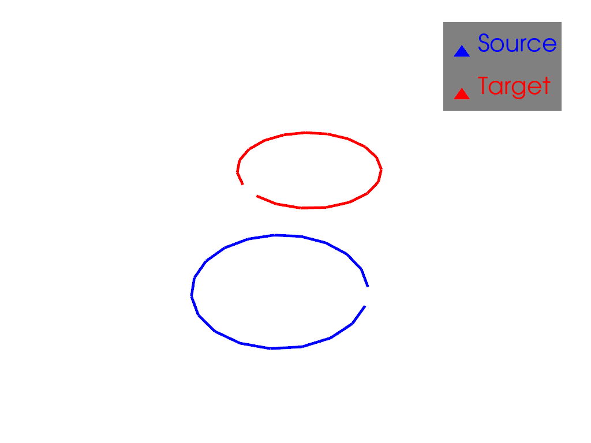
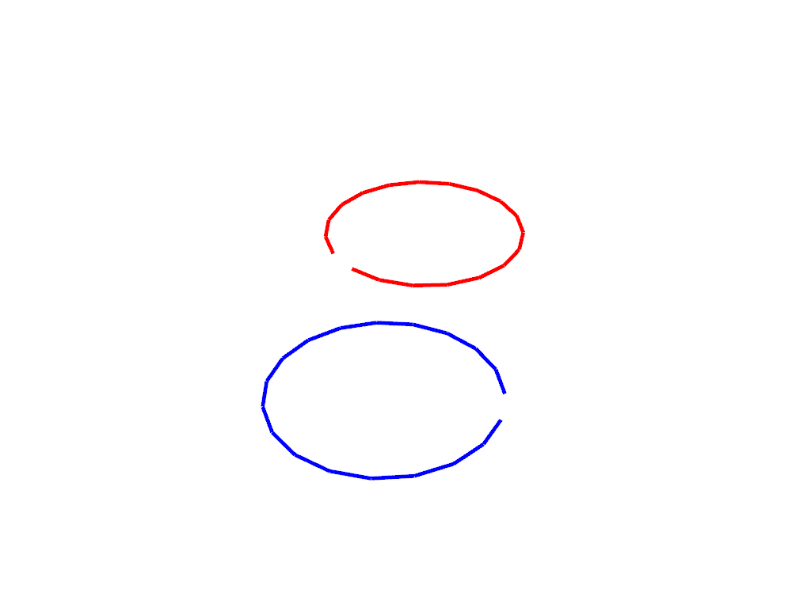

Note
Go to the end to download the full example code
Example of rigid motion registration#
This is an example of rigid motion registration, or alignment, in 2D.
import pyvista as pv
import torch
from pyvista import examples
import skshapes as sks
## Load data
We load two toys datasets in 2D: wireframe meshes representing circles. To be able to see orientations, we remove one edge from each circle. The points of both circles are in dense correspondence.
source = sks.PolyData(examples.download_human())
target = sks.PolyData(examples.download_doorman())
# Load the circle
source = sks.Circle()
target = sks.Circle()
source.edges = source.edges[:-1]
target.edges = target.edges[:-1]
/opt/hostedtoolcache/Python/3.11.8/x64/lib/python3.11/site-packages/skshapes/input_validation/converters.py:102: UserWarning: Mesh has been cleaned and points were removed. point_data is ignored.
return func(*new_args, **kwargs)
## Apply a rigid motion to one of the circles
Rigid motion are parametrized by a rotation and a translation. We apply a rigid motion to one of the circles.
theta = 0.75 * torch.pi # angle in radians
translation = torch.tensor([1.0, 0.8]) # translation in the plane
# In 2D, the parameter is a 3D vector: [theta, tx, ty]
parameter = torch.cat([torch.tensor([theta]), translation])
# Apply the rigid motion to the circle
rigid_motion = sks.RigidMotion()
source = rigid_motion.morph(
shape=source,
parameter=torch.cat([torch.tensor([theta]), translation]),
).morphed_shape
plotter = pv.Plotter()
plotter.add_mesh(
source.to_pyvista(),
color="blue",
show_edges=True,
line_width=5,
label="Source",
)
plotter.add_mesh(
target.to_pyvista(),
color="red",
show_edges=True,
line_width=5,
label="Target",
)
plotter.add_legend()
plotter.show()

## Rigid registration
from skshapes.loss import L2Loss
from skshapes.morphing import RigidMotion
from skshapes.tasks import Registration
loss = L2Loss()
model = RigidMotion(n_steps=5)
registration = Registration(
model=model,
loss=loss,
n_iter=5,
verbose=True,
)
registration.fit(source=source, target=target)
Initial loss : 7.06e+00
= 7.06e+00 + 1 * 0.00e+00 (fidelity + regularization_weight * regularization)
Loss after 1 iteration(s) : 2.92e-03
= 2.92e-03 + 1 * 0.00e+00 (fidelity + regularization_weight * regularization)
Loss after 2 iteration(s) : 7.31e-07
= 7.31e-07 + 1 * 0.00e+00 (fidelity + regularization_weight * regularization)
Loss after 3 iteration(s) : 4.01e-07
= 4.01e-07 + 1 * 0.00e+00 (fidelity + regularization_weight * regularization)
Loss after 4 iteration(s) : 4.01e-07
= 4.01e-07 + 1 * 0.00e+00 (fidelity + regularization_weight * regularization)
Loss after 5 iteration(s) : 4.01e-07
= 4.01e-07 + 1 * 0.00e+00 (fidelity + regularization_weight * regularization)
<skshapes.tasks.registration.Registration object at 0x7f1f13bff110>
## Animation of the registration
path = registration.path_
plotter = pv.Plotter()
actor = plotter.add_mesh(
source.to_pyvista(), color="blue", show_edges=True, line_width=5
)
plotter.add_mesh(
target.to_pyvista(), color="red", show_edges=True, line_width=5
)
plotter.open_gif("rigid_registration.gif", fps=3)
for _i, shape in enumerate(path):
plotter.remove_actor(actor)
actor = plotter.add_mesh(
shape.to_pyvista(), color="blue", show_edges=True, line_width=5
)
plotter.write_frame()
plotter.close()

Total running time of the script: (0 minutes 1.017 seconds)